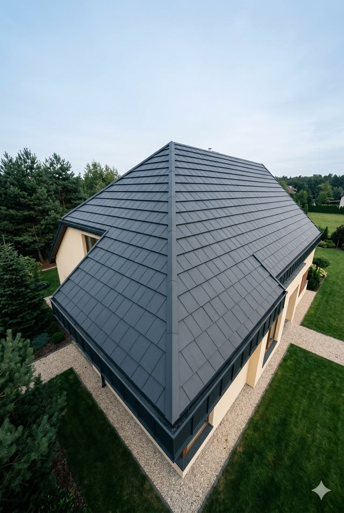

Кровельные работы в Ростове-на-Дону любой сложности
Профессиональное устройство стропильных систем и монтаж кровли под ключ. Официальный дилер Grand Line и Технониколь. Фиксированная цена по договору.
Вызвать замерщикаПрофессиональное устройство стропильных систем и монтаж кровли под ключ. Официальный дилер Grand Line и Технониколь. Фиксированная цена по договору.
Вызвать замерщика
Устройство кровли из оригинальной стали толщиной строго 0.5 мм. Идеальная геометрия стыков, повышенная стойкость к ультрафиолету и южному климату Ростова.
Монтаж многослойной мягкой черепицы SHINGLAS. Абсолютная звукоизоляция во время дождя, долговечность и надежная гидроизоляция кровельного пирога.
Строгие решения для частных домов и коммерческих объектов. Надежные замковые соединения, исключающие любые протечки стропильной системы.
Стоимость кровельных работ фиксируется до начала процесса. Прописываем юридическую гарантию на герметичность узлов и качество монтажа.
Монтируем стропильную систему строго по СНиП. Никакой экономии на пиломатериалах — крыша выдержит любые ветровые и снеговые нагрузки.
Интегрируем супердиффузионные мембраны и вентилируемые коньки. Ваша кровля и утеплитель не сгниют от конденсата через 3 года.